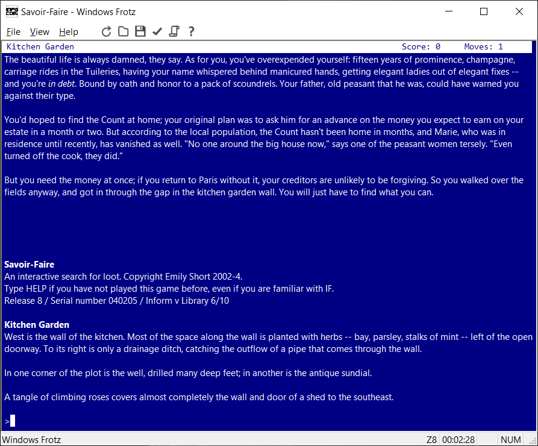
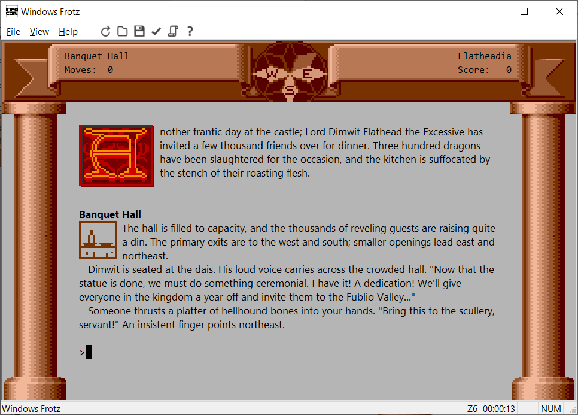

During the late 1980s and early 1990s many people worked to decode Infocom's format, producing several interpreters for the format (which is called Z-code, or the Z-Machine, with the Z coming from Zork, Infocom's first game). Windows Frotz is the latest in this line of interpreters. During the early 1990s, Graham Nelson took the next step by writing a compiler for the format, called Inform. The result is that the modern text adventure community have written several hundred games in this format that can be played with this interpreter.
The current version is available from Windows Frotz's GitHub release page. For ratings and descriptions of games you can play, search for Z-code games at IFDB.
Frotz supports The Treaty of Babel, and can read game metadata in the iFiction format defined by the treaty. For an example of this, you can download a copy of Graham Nelson's Curses, packaged as a Blorb file with metadata and cover art.
Here are two screenshots of the interpreter in action: first Emily Short's Savoir-Faire, and then Infocom's Zork Zero.

